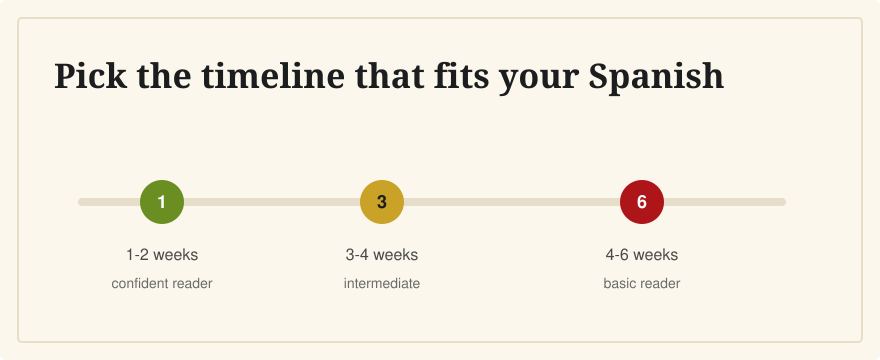

How Long Should I Study for the CCSE?
Last verified: June 5, 2026
Many English speakers can prepare in a few weeks, but the right timeline depends on your Spanish reading and how much of Spain's civic vocabulary is already familiar.

If you read Spanish comfortably, plan 1 to 2 weeks of focused review. If your Spanish is basic, plan 4 to 6 weeks. If you are also preparing for DELE A2, separate the two: CCSE is a knowledge test, while DELE is a language exam.
Start With the Official Format
The CCSE is 25 questions in 45 minutes, and you need 15 correct answers to pass. Instituto Cervantes provides free official materials, including the current manual and a model test. Your study time should be measured by reliable mock results, not by how many pages you have skimmed.
The official CCSE exam itself is in Spanish, so your final practice should use the Spanish question wording even if you learn concepts through English explanations first.
Suggested Timelines
1 to 2 weeks: confident Spanish readers
Review the official question bank, flag weak categories, and take several timed mock exams. Focus on mistakes and similar-looking answer options.
3 to 4 weeks: intermediate Spanish readers
Study daily in short sessions. Use English explanations to learn the idea, then return to Spanish-only practice. Add timed exams in the final week.
4 to 6 weeks: basic Spanish readers
Spend the first half building vocabulary and understanding. Spend the second half testing recall without English prompts. Do not book the exam until you can pass Spanish-only practice reliably.
A Weekly Plan
- Week 1: learn the format, read official materials, and sort questions by topic.
- Week 2: review weak topics and build a civic vocabulary list.
- Week 3: take full 25-question mocks and review explanations.
- Final week: practice mostly in Spanish, timed, with no hints.
When You Are Ready
A good readiness signal is consistently scoring above the pass mark with a margin. Because the official pass mark is 15 out of 25, many learners aim for 20 or more in practice before sitting the exam.
Related Guides
- How hard is the CCSE?
- How many questions can I miss?
- Best CCSE study resources for English speakers
- What happens if I fail?
Sources
- Instituto Cervantes: CCSE format and pass mark
- Instituto Cervantes: CCSE preparation materials
- Instituto Cervantes: CCSE 2026 exam dates and registration deadlines
CCSE English supports short daily sessions with Spanish questions, English translations, and explanations that make review more efficient.